Desktop and web applications that make virtual team management easier — creating a virtual office environment that restores the ambient awareness of an open floor plan for remote call agents.
When Broadpath Healthcare transitioned their call agent workforce to remote work post-COVID, something invisible broke: the ambient awareness of a shared office. Agents no longer knew who was available, who was on break, or who to reach out to. Managers lost visibility into their teams. Miscommunications increased and engagement dropped.
The goal was to design Bhive — a virtual office platform consisting of a desktop application and web portal — that would restore that human connection layer for remote teams without requiring employees to be on camera all day.
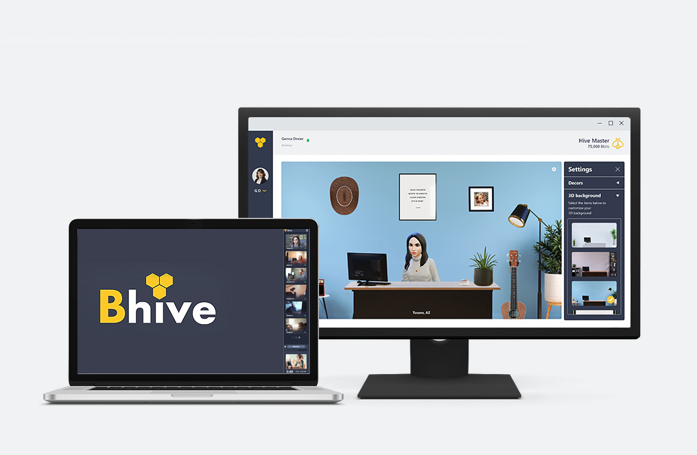
The Bhive platform — desktop application and web portal working together to create a connected remote work environment.
Research began with observation-based discovery at Broadpath Healthcare. I conducted user interviews with call agents, distributed surveys across the organization, and performed a competitor analysis of similar tools in the healthcare software space. Three themes emerged consistently:
"Most of the users don't feel comfortable being recorded on the camera all the time."
— Recurring sentiment from user interviews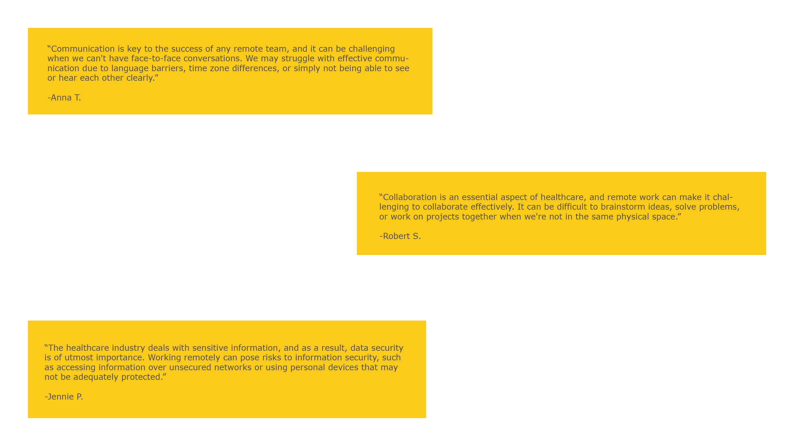
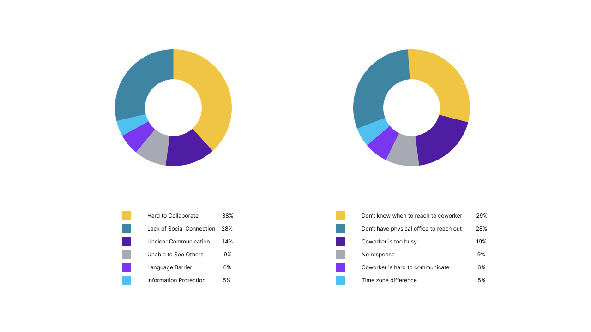
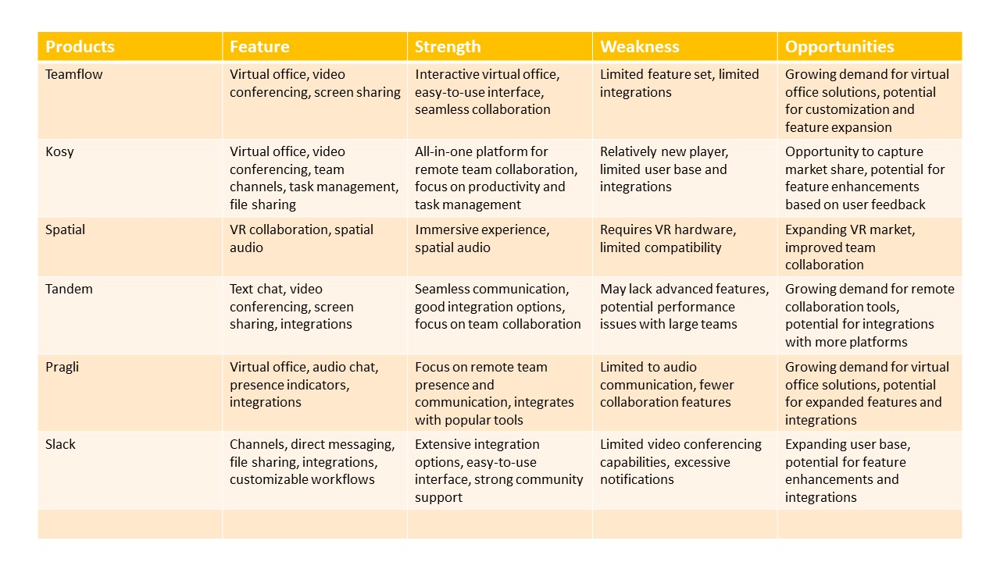
The project shipped in two main phases. Phase 1 focused on status and productivity infrastructure. Phase 2 introduced the avatar system — a direct response to the privacy concerns surfaced in research.
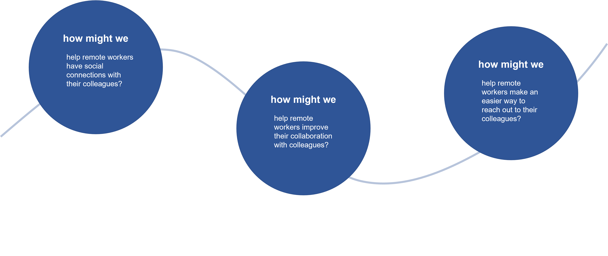
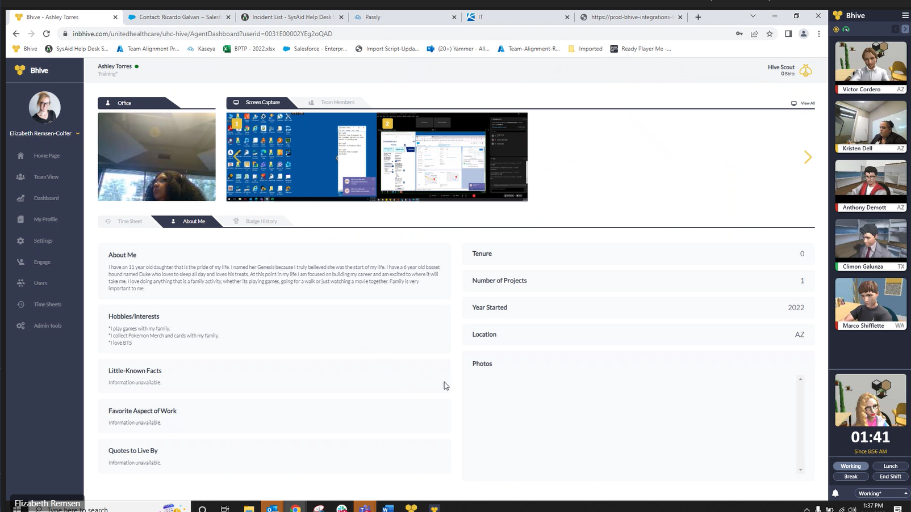
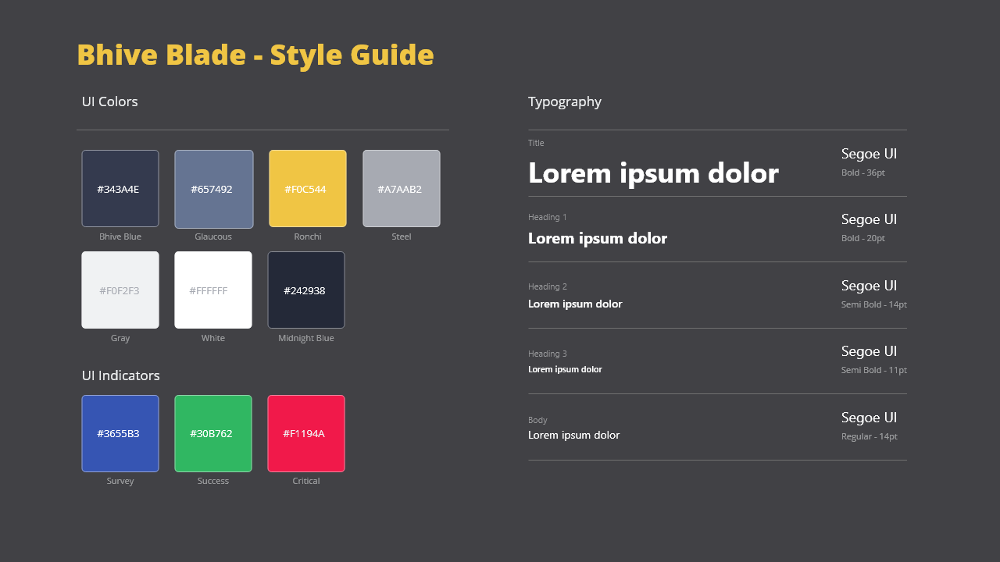
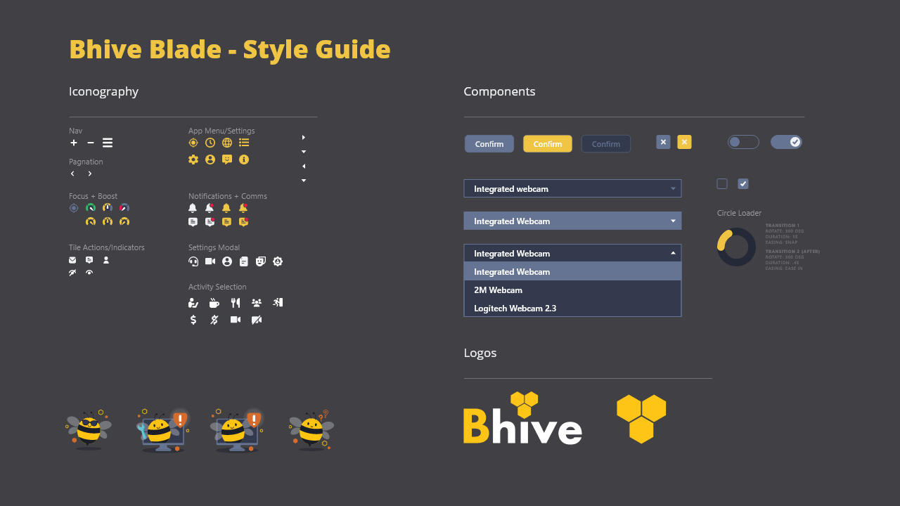
Bhive ships as two connected products: a desktop application for real-time presence and productivity, and a web portal that acts as the social and administrative layer of the remote office.
Employees broadcast their current state — Focus Mode, On Break, At Lunch — through the desktop app. Status icons were validated through A/B testing against alphabetic labels; graphical icons won by 59%.
Facial detection generates a personalized avatar via Ready Player Me, displayed in the virtual office. Employees get visual presence in the shared workspace without being on camera — addressing the core privacy concern from research.
The web portal surfaces a shared virtual workspace where avatars populate the "floor" — giving teams ambient awareness of who's at their desk. A toggle lets users switch between the virtual office view and their profile page.
Integrated timesheet submission with manager approval, and a survey tool for collecting team feedback — embedded directly in the platform so managers don't need to context-switch to separate tools.
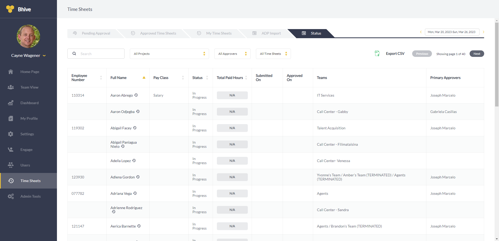
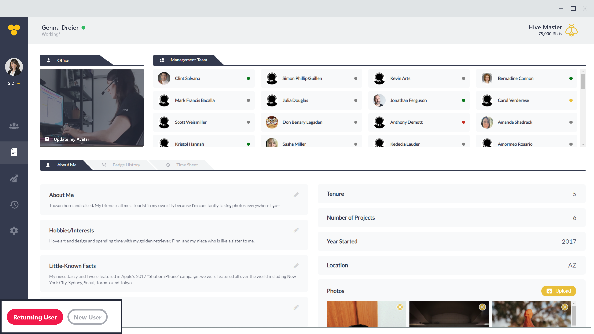
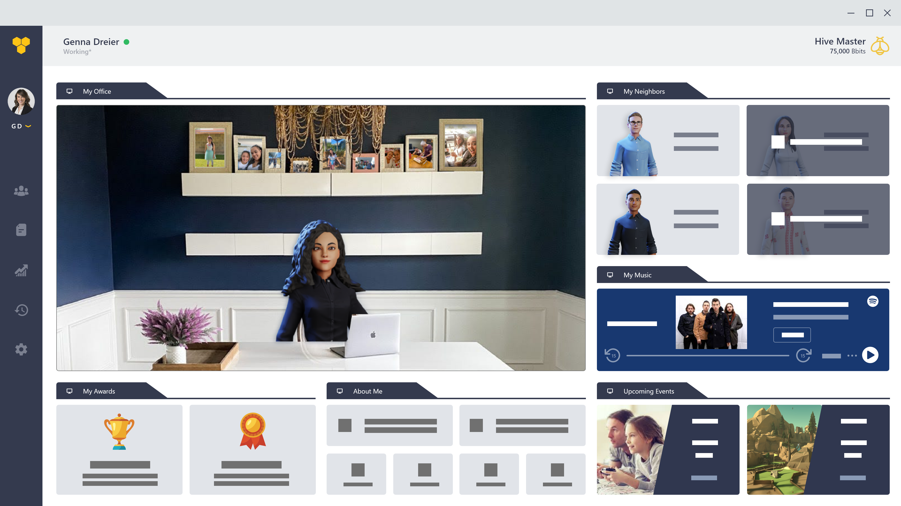
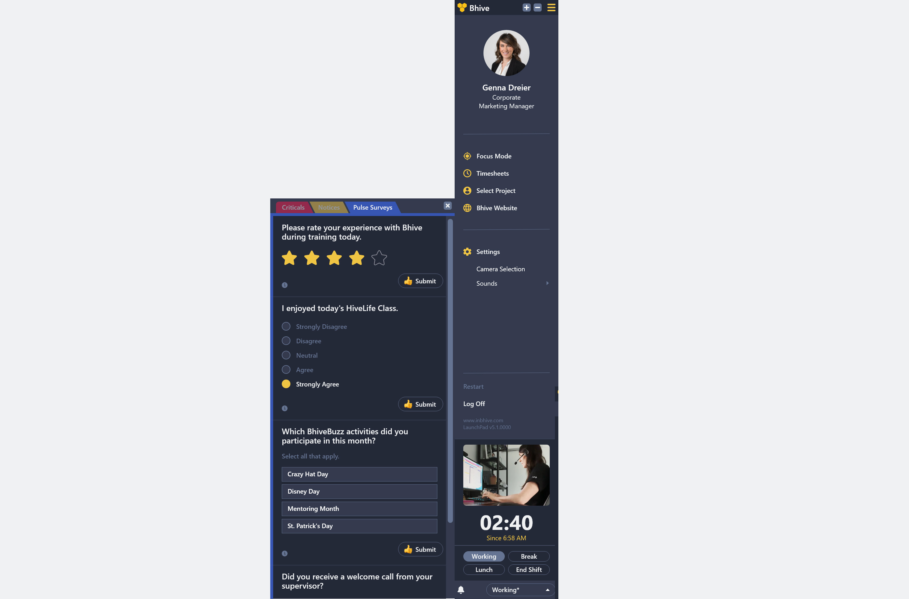
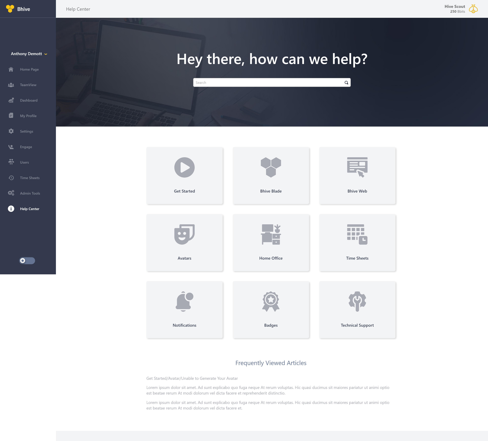
Usability testing with real call agents surfaced clear, quantifiable preferences that shaped the final design. A/B testing validated key interaction decisions before shipping.
of users wanted a camera preview before enabling live feed — drove an explicit preview step
preferred graphical status icons over alphabetic labels in A/B testing
phases shipped — status infrastructure first, avatar presence second
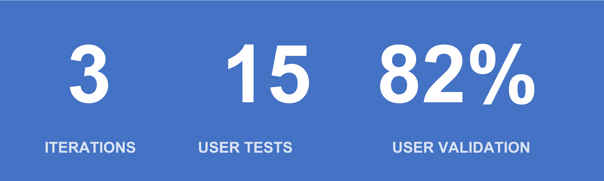
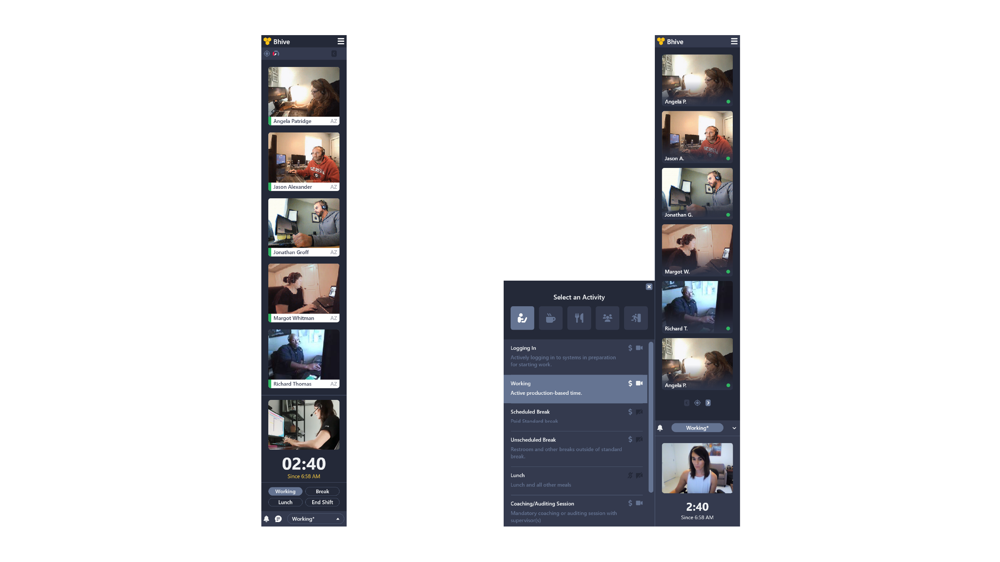
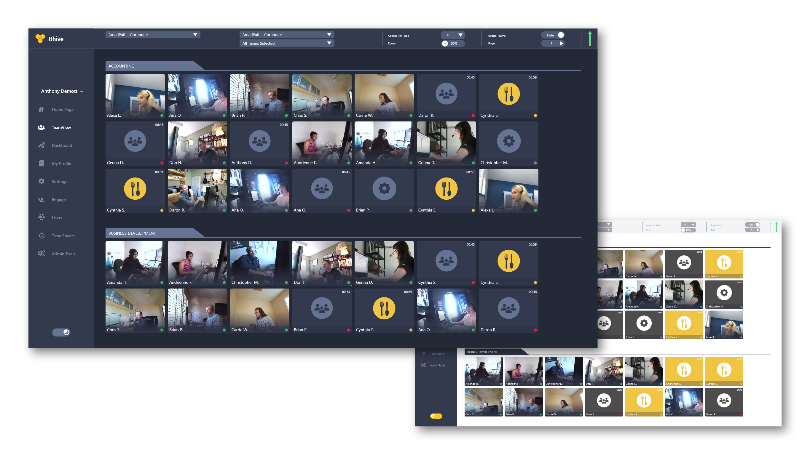
This project taught me that privacy isn't just a compliance checkbox — it's a design constraint that shapes the entire solution. The avatar system only emerged because we listened when users said they didn't want to be on camera. Had we pushed through with live video, adoption would have stalled at the feature level, not the UX level.
I also learned the value of phased delivery. Shipping status and timesheets first gave us a working product while we solved the harder avatar and virtual office problems. Stakeholders had something in their hands while the more ambitious phase was being designed and tested.
One design decision I'd revisit: I broke the auto-save convention for camera settings and added an explicit "Save change" button so users could preview before going live. It was the right call for this context, but worth flagging as a conscious departure from platform norms rather than an oversight.